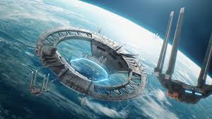

Cyberpunk y Más
- Dystopia: Sociedades controladas y oscuras.
- Space Opera: Star Wars y grandes flotas estelares.
Estos subgéneros no solo exploran la tecnología avanzada, sino que también plantean dilemas éticos sobre la condición humana. Mientras la distopía nos advierte sobre futuros posibles, la Space Opera nos invita a soñar con la exploración de confines desconocidos del universo.
